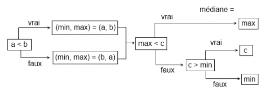

Le tri rapide (supposé connu) peut se révéler très efficace en pratique.
Il a cependant un énorme défaut : son pire des cas est quadratique (c'est-à-dire en O(n^2) où n est la taille de l'entrée), contrairement au tri par tas par exemple. De plus, il est moins efficace que le tri par insertion sur de petits ensembles. À partir de là, on peut s'appuyer sur ces deux constats en améliorant le tri rapide, et pourquoi pas, chercher d'autres voies d'optimisation.
C'est le but de ce cours, qui est en quelque sorte une suite du cours sur le tri rapide déjà présent sur le site. Afin qu'un maximum de personnes puissent comprendre les codes proposés, ils seront écrits en C++ et auront une sémantique abordable.
Il existe de nombreuses approches permettant de trier des données. Certaines sont même capables de se passer de l'opérateur de comparaison en faisant des suppositions sur ses données (par exemple : ce sont des entiers uniformément répartis, dans le cas du tri à paniers). Il a été démontré mathématiquement qu'un tri basé sur les comparaisons ne pouvait faire mieux que O(n\log{n}) en terme de complexité algorithmique, où n est la taille de l'entrée.
Principe
Le tri rapide, ou quicksort, fait partie des tris qui utilisent les comparaisons. Son principe suit l'approche "diviser pour régner" : on sélectionne un élément de l'ensemble (le pivot) avant de placer d'un coté les éléments inférieurs ou égaux à cet élément, et de l'autre ceux qui lui sont supérieurs. On parle de partitionnement. On applique à nouveau le même procédé sur les deux sous-ensembles, et ainsi de suite. On dit que c'est un algorithme récursif car il s'utilise lui-même. Il peut se résumer de la manière suivante : On partitionne l'ensemble en deux et on trie séparément les deux partitions.
Dès lors qu'il est question de récursivité, il faut se poser la question de la condition d'arrêt : quand est-ce qu'on s'arrête ? Ici, c'est trivial : on stoppe les appels récursifs quand les sous-ensembles sont vides ou ne comportent plus qu'un élément (singleton), puisqu'il s'agit d'ensembles déjà triés.
Ce tutoriel a pour but de présenter les améliorations "classiques" que l'on peut apporter au tri rapide. Ci-dessous une implémentation d'un tri rapide ordinaire. Il se base sur deux random access iterator pour délimiter le segment à trier.
template < typename Iterator >
void quicksort(Iterator begin, Iterator end)
{
// Si l'ensemble est vide ou est un singleton, il est déjà trié :
if(begin == end || begin+1 == end)
return;
typedef typename Iterator::value_type value_type;
// On ne se soucie pas de l'algorithme de partitionnement :
Iterator middle = std::partition(begin+1, end, std::bind2nd(std::less < value_type >(), *begin));
std::iter_swap(begin, middle-1);
// Appels récursifs sur les deux partitions :
quicksort(begin, middle-1);
quicksort(middle, end);
}
Complexité
Le tri rapide ne nécessite pas de structure de données supplémentaire : il trie les éléments directement dans l'ensemble. C'est un tri dit en place. Cependant, les appels récursifs obligent l'utilisation d'une pile d'appel pour garder trace de leur contexte ; cette pile a en moyenne une taille de l'ordre de log2(n), mais peut atteindre un ordre de grandeur de n dans le pire des cas.
Là où la question de la complexité se pose, c'est au niveau du nombre de comparaisons que l'algorithme effectue en fonction de la taille de l'entrée. Je donne la complexité moyenne : O(n\log{n}). Son calcul, assez long et difficile, n'aurait pas sa place ici. Néanmoins, si vous êtes intéressés, je vous renvoie à ce document.
La complexité au meilleur des cas est asymptotiquement la même. Pour vous en rendre compte, imaginez que l'ensemble soit systématiquement partitionné selon la valeur médiane. Cela impliquerait que les deux partitions résultantes ont plus ou moins la même taille, c'est-à-dire grosso modo la moitié de la taille d'origine. En somme, la profondeur de récursion atteindrait alors \log{n}, et comme à chaque niveau on effectue n opérations pour le partitionnement, on a bien une complexité de O(n\log{n}).
On sait que le tri rapide est bon, ce n'est donc pas le meilleur des cas qui nous intéresse, mais bien le pire. Supposez que le pivot ne soit pas systématiquement la médiane, mais une borne de l'ensemble à trier (par exemple le plus petit élément). Le partitionnement donnera un ensemble vide et un ensemble de taille n-1 si la taille initiale était n. À la première étape, cette répartition nécessite n opérations. Le coup suivant, elle en nécessitera n-1, puis n-2, jusqu'à ce qu'il ne reste plus rien à trier. C'est exactement le principe du tri par sélection, qui est en O(n^2).
Dans le pire des cas, le tri rapide est donc quadratique. Dans ce cas, pourquoi l'utiliser quand on pense qu'il existe des tris qui se comportent toujours de façon optimale ?
Le tri rapide est en moyenne plus efficace qu'un autre pour des raisons de localité de données : chaque appel va "travailler" sur des données très proches en mémoire. En raison des caches permettant des optimisations considérables quand les données ont une forte localité, l'algorithme présente de meilleures performances, c'est normal.
En plus de ça, il peut se révéler fiable si on l'améliore dans le but d'éviter son "pire des cas".
Dans cette section comme dans la suivante, nous allons étudier l'une des nombreuses améliorations "en interne" du tri rapide.
Quand une fonction est récursive, c'est-à-dire quand dans sa définition on retrouve au moins un appel à la même fonction, l'environnement d'exécution doit garder trace des différents contextes d'appel. C'est assez bien expliqué dans le cours sur la récursivité. En réalité, dès qu'un appel de fonction est exécuté, il est enregistré dans une pile appelée callstack (pile d'appel) et en est effacé à la sortie de la fonction. Avoir de nombreux appels récursifs, comme c'est le cas pour le tri rapide, implique une taille potentiellement importante de la callstack. C'est pourquoi on peut parler d'une complexité mémoire.
Le tri rapide a une complexité mémoire en moyenne de O(\log{n}), mais dans le pire des cas (entrée quadratique), elle peut être en O(n). Heureusement, on peut y remédier.
Connaissez-vous la récursion terminale (tail-rec) ? Il s'agit simplement du fait qu'un appel récursif soit situé en dernière instruction de la fonction. Comme il n'y a plus rien à faire "après", il est inutile de garder trace du contexte. Du coup, le compilateur optimise : si l'on peut se passer du contexte, on peut se passer de la pile d'appel ! Cette approche peut être utilisée pour améliorer la complexité mémoire du tri rapide.
Comment ? C'est simple : il faut voir que dans le cas du quicksort, il y a deux appels récursifs et qu'en pratique ils ne travaillent que très rarement sur des sous-ensembles de taille identique comme le voudrait le cas optimal. L'idée est alors de placer l'appel sur le segment le plus long en dernière instruction pour bénéficier de l'optimisation par récursion terminale pour la partition qui prendra le plus de temps à être triée. De toute façon, l'ordre des deux appels récursifs n'a aucune incidence sur le résultat : les deux travaillent sur des segments indépendants.
De cette manière, on arrive à éliminer le cas où la complexité mémoire est en O(n). Elle sera toujours de l'ordre de O(\log{n}) et, étonnement dans le pire des cas - en termes de complexité algorithmique - en O(1).
Malgré une bonne optimisation mémoire, cette technique est en général légèrement plus lente qu'un tri rapide ordinaire. Cela vient du fait qu'un test supplémentaire est effectué pour déterminer la partition la plus grande. Sur 3 millions d'éléments générés aléatoirement, j’obtiens 2.217 secondes pour un tri rapide à callstack optimisé contre seulement 2.183 pour un tri rapide classique.
Il est facile de voir que l'élément déterminant dans les performances du tri rapide est le pivot. C'est en fonction de lui que les partitions sont crées et plus précisément c'est lui qui va déterminer la taille de chacune des deux partitions. Ces tailles jouent beaucoup : quand elles sont à peu près égales ou que l'écart reste globalement raisonnable tout au long du tri, ce dernier se comporte de façon optimale, c'est-à-dire en O(n\log{n}). Cela survient quand le pivot se trouve être la médiane ou un élément qui s'en rapproche. En revanche, quand la première partition est toujours beaucoup plus grande que la seconde (ou l'inverse), le tri devient quadratique. Dans ce cas, le pivot est soit une valeur minimal, soit une valeur maximale ("une" parce que ce ne sont pas nécessairement les bornes de l'ensemble).
Le code de base que l'on s'est fixé en première sous-partie choisi systématiquement la première valeur du segment comme pivot. Dans le cas d'une entrée triée dans un sens ou dans l'autre, cette première valeur sera minimale ou maximale. Quicksort ne sera donc plus efficace du tout. Il est regrettable qu'un tri si prometteur se comporte aussi mal sur une entrée triée. Peut-on y remédier ?
Une approche naïve consiste alors à ne plus choisir la première valeur comme pivot, mais la valeur centrale. Dans le cas d'une entrée triée, le tri devient alors optimal puisque le pivot se trouvera être systématiquement la médiane du segment. Il ne faut pas crier victoire trop vite, ce changement est en réalité une illusion : le cas quadratique n'est pas éliminé, il prend simplement une autre forme. En réalité, vous pouvez vous fixer le pivot que vous voulez, vous n'arriverez pas à éliminer le cas quadratique de cette façon.
Il en va de même pour un pivot sélectionné aléatoirement, à la différence près qu'on ne sera alors plus en mesure de prédire le cas quadratique. Cela peut se révéler utile : un pirate ne pourra plus volontairement planter votre tri. La situation est exagérée, mais l'idée est là. Mais sinon, que faire ?
Trouver la médiane entre trois éléments
Une approche plus recherchée consiste alors à choisir trois éléments, de préférence la première et la dernière valeur avec la valeur centrale, et à en déterminer la médiane. Par exemple le triplet (4 9 2) admet 4 comme médiane.
Cette technique est plus efficace que de partir sur un choix unique de pivot dès le départ. L'espérance mathématique que l'algorithme se comporte en temps quadratique est considérablement diminuée, bien qu'existante. En revanche, déterminer la médiane d'un triplet d'éléments est une tâche légèrement plus compliquée que d'en trouver le maximum ou le minimum.
En partant par exemple du triplet (a b c) dont on ne connait pas les valeurs, déterminer le maximum revient à trouver la valeur maximale entre a et b, que nous allons appeler max, et à la comparer à c. Si elle est inférieure, le maximum est c, sinon c'est max. Pour la médiane, c'est plus subtil : dès qu'on a déterminé max, on peut dire que c'est la médiane qu'à partir du moment où max < c. Quand max > c, il faut comparer c au minimum entre a et b, appelé min. Le schéma d'analyse suivant résume cet algorithme :

Algorithme de calcul de la médiane d'un triplet (a b c)
Vous l'avez bien compris : le tri rapide utilise l'approche "diviser pour régner". Pour que le concept de "régner" (synonyme d'efficacité) prenne son sens, il faut partir sur un grand nombre d'éléments. Utiliser la même approche sur une petite quinzaine d'éléments par exemple, c'est un peu sortir l'arme nucléaire pour tuer une mouche. L'utilisation d'un tri rapide est-elle donc encore justifiée ?
La réponse est non, bien évidemment. On n'est pas les premiers à y penser ; un informaticien américain du nom de Robert Sedgewick a suggéré l'utilisation d'un tri plus simple quand la taille des sous-ensembles devient trop ridicule face à l'approche du tri rapide. Cette technique porte d'ailleurs son nom : c'est le tri de Sedgewick, ou sedgesort.
Toute la question est de savoir quel tri alternatif choisir et quand l'appliquer. Une approche assez répandue consiste à stopper le tri rapide quand il arrive sur de petits ensembles et à appliquer un tri par insertion sur l'ensemble final alors presque trié. La raison est simple : le tri par insertion, de par son principe et sa simplicité, se comporte bien mieux que la plupart des tris sur des ensembles déjà presque triés. En général, le nombre d'opérations est alors de l'ordre de O(n).
Cependant, l'optimisation par l'utilisation des caches - qui fait l'une des forces du tri rapide - est ici à notre désavantage : on perdrait en efficacité à vouloir appliquer un seul tri par insertion tout à la fin plutôt que de l'appliquer étape par étape pour chaque segment devenu trop petit. Cependant, vous ne remarquerez pas de différence entre un tri rapide et un tri par insertion sur un ensemble d'environ 50 éléments. Cette optimisation vaut-elle donc le coup d'être appliquée ? En réalité, quand il y en a beaucoup de ces ensembles, les gains de performance se font étonnement bien sentir. L'utilisation du sedgesort est donc tout à fait justifiée.
Pour rendre cette stratégie la plus efficace possible, il faut déterminer à quel moment on arrête le tri rapide, c'est-à-dire qu'il faut se fixer une bonne taille pour les "petits" ensembles. D'une manière assez surprenante, cette taille va être déterminante. Vous n'aurez par exemple pas du tout les mêmes performances en vous fixant une limite de 10 qu'en vous fixant une limite de 20. Ce qui est regrettable, c'est que cette limite dépend avant tout de votre matériel.
J'ai ainsi effectué un petit test de performance du sedgesort sur ma machine en observant ce que ça donne pour des limites allant de 2 à 10 éléments :
Tri de 3 millions d'éléments générés aléatoirement :
Quicksort : 2.167 s (sans l'amélioration de Sedgewick)
Sedgesort :
limite : 2 : 2.134 s
limite : 3 : 2.118 s
limite : 4 : 2.108 s
limite : 5 : 2.099 s
limite : 6 : 2.101 s
limite : 7 : 2.107 s
limite : 8 : 2.117 s
limite : 9 : 2.124 s
limite : 10 : 2.134 s
Il serait inutile de tester le pire des cas puisqu'il est assez prévisible. En effet, on se retrouverait à appliquer un tri par insertion sur un petit sous-ensemble au total, le reste ayant été trié à la manière d'un tri par sélection. Globalement, on est alors de l'ordre du quadratique.
En répétant le test sur plusieurs tableaux de taille différente (générés aléatoirement), il est devenu évident que sur mon architecture, la limite optimale pour un tri rapide "partiel" est de 5. En général, on n'en est pas loin, certains conseillent cependant de se situer aux alentours de 15. Le mieux est encore d'effectuer le test sur sa propre machine. La comparaison par rapport au temps d'exécution d'un tri rapide basique est sans appel : sedgesort peut réellement se montrer plus efficace.
Une implémentation possible du tri de Sedgewick (utilisée pour le test de performance) :
Pour l'instant, nous sommes en mesure d'optimiser l'utilisation de la pile d'appel, de choisir un meilleur pivot que le premier élément et d'appliquer un tri plus rapide sur les petits segments quand ceux-ci se présentent au tri rapide. Avec tout ça, on n'a toujours pas éliminer le fameux risque du cas quadratique qui est un peu la bête noire du tri rapide.
Que fait-on, on laisse tomber le tri rapide pour un tri par tas qui a l'avantage d'être toujours optimal ? Bien sûr que non, il existe un moyen de contrer ce pire des cas. L'idée qu'a eu David Musser en 1997, c'est de stopper le tri rapide avant qu'il ne dégénère en O(n^2) puis à appliquer un algorithme optimal sur ce qu'il reste à trier.
Pour cela, il faut pouvoir détecter quand les choses commencent à mal se présenter. Le problème du tri rapide est au niveau du pivot, quand celui-ci est un minimum ou un maximum du segment, on se retrouve avec un tri par sélection implémenté récursivement. Au lieu d'arriver à une profondeur de récursion en O(\log{n}), elle est alors en O(n). On ne parle évidemment pas de la pile d'appel : bien que les contextes d'appel ne soient peut-être pas enregistrés dans la callstack, l'algorithme effectue tout de même O(n) opérations à chaque appel, ce qui donne bien une complexité globale quadratique.
L'astuce consiste alors à utiliser un compteur de récursion. Il est incrémenté pour chaque appel récursif. Dès que ce compteur dépasse K\log{n} où K est une constante, on arrête le tri rapide et on le remplace par un tri optimal, par exemple le tri par tas. De cette manière, on élimine la possibilité d'une exécution en temps quadratique tout en gardant les avantages de l'optimisation par les caches du tri rapide.
Cette alternative est l'introsort.
Afin de comparer l'efficacité de cette technique en fonction de la fameuse constante K, voici quelques tests effectués sur un tableau de grande taille généré aléatoirement :
Tri de 3 millions d'éléments générés aléatoirement :
Quicksort : 2.189 s
Introsort :
K = 1 : 2.781 s
K = 2 : 2.251 s
K = 3 : 2.169 s
K = 4 : 2.169 s
K = 5 : 2.173 s
K = 6 : 2.171 s
K = 7 : 2.171 s
K = 8 : 2.172 s
En réalité, dans le cas d'une entrée très désordonnée, les gains de performance sont minimes voire dans certains cas inexistants. Là où ça devient très intéressant, c'est quand on présente une entrée presque déjà triée à quicksort et à introsort en comparant le temps d'exécution des deux. Je pars d'une implémentation où le pivot est le premier élément du segment, c'est-à-dire où une entrée presque déjà triée rend le tri rapide quadratique.
Les résultats sont sans appel :
Tri de 90 000 éléments presque triés :
Quicksort : 38.859 s
Introsort :
K = 1 : 0.092 s
K = 2 : 0.108 s
K = 3 : 0.127 s
K = 4 : 0.144 s
K = 5 : 0.163 s
K = 6 : 0.180 s
K = 7 : 0.197 s
K = 8 : 0.216 s
Quand on ne sait pas à quelle entrée s'attendre, K=3 présente donc un bon compromis entre gain de temps et niveau de désordre de l'entrée. Voici l'implémentation d'introsort que j'ai écrite pour réaliser ce test :
Introsort peut bien entendu être couplé avec l'amélioration de Sedgewick pour le rendre encore plus efficace, et pourquoi ne pas y ajouter l'astuce 3-médiane. À vous de jouer !
J'espère que ce petit exposé sur les améliorations du tri rapide vous a plu. En regardant de plus près, j'ai constaté que ma propre bibliothèque standard C++ implémentait la fonction std::sort de l'entête algorithm sous la forme d'une combinaison entre un introsort et un tri 3-mediane. Du coup, il n'est pas surprenant qu'elle soit si efficace !
D'autres améliorations avaient été proposées pour le tri rapide et notamment l'utilisation de l'algorithme BFPRT pour calculer de façon déterministe la médiane du segment à trier. En réalité, BFPRT permet de calculer en temps linéaire le n-ième plus grand élément d'un tableau, donc a fortiori la médiane. En théorie, c'était magique : on pouvait enfin rendre quicksort optimal dans tous les cas sans changer de méthode de tri. Dans la pratique, le calcul de la médiane était cependant bien trop coûteux pour être réellement utilisable, c'est pourquoi cette technique a été jetée aux oubliettes.
L'algorithme de partitionnement est également déterminant dans l'efficacité du tri rapide. Une implémentation naïve place tous les éléments égaux au pivot du même côté. C'est pour cette raison que quicksort peut très mal se comporter sur de grands tableaux ne comportant que des éléments de même valeur. Pour y remédier, il existe un algorithme de partitionnement plus complexe mais tout de même linéaire, plus d'infos ici.
L'implémentation du partitionnement de la STL - std::partition - n'est pas stable, c'est-à-dire qu'elle ne conserve pas l'ordre qu'il y avait au départ entre les éléments égaux. Ceci peut être gênant, par exemple quand on trie une liste de couples selon le premier élément. Pour deux couples ayant la même première valeur, on n'est pas sûr de retrouver la deuxième valeur dans le même ordre après partitionnement. Pour y remédier, la STL nous propose une autre fonction - std::stable_partition - généralement plus gourmande en mémoire.
Le domaine des algorithmes de tri est vaste est intéressant. Il existe de nombreuses manières de trier, et il est difficile d'en faire le tour. Par exemple, une amélioration du tri par tas a été proposé par l'informaticien Edsger Dijkstra en 1981 : smoothsort. Ce tri, basé sur les comparaisons, a la particularité d'être toujours optimal et de présenter une complexité en O(n) dans le cas d'une entrée déjà presque triée. Impressionnant !